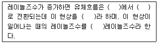
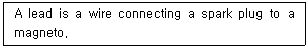
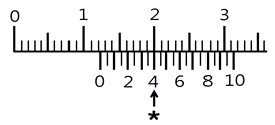
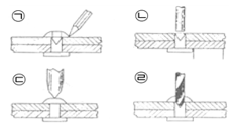
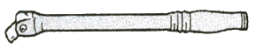

항공기관정비기능사 (2016-01-24 기출문제)
1과목: 비행원리
1. 정상 수평선회하는 비행기의 경사각이 45도일 때 하중배수는 얼마인가?
- 1
- √2
- √3
- 2
(정답률: 79%)

2. 비행기가 정지 상태로부터 등가속도 a＝20m/sec2로 20초 동안 지상활주를 하였다면 이 비행기의 지상활주거리 몇 ㎞인가?
- 2
- 3.5
- 4
- 4.5
(정답률: 75%)
3. 다음 ( )에 알맞은 용어들이 순서대로 나열된 것은?

- 난류 - 층류 - 박리 - 임계
- 층류 - 난류 - 천이 - 임계
- 층류 - 난류 - 임계 - 박리
- 난류 - 층류 - 천이 - 임계
(정답률: 85%)
4. 날개의 공기역학적 중심이 비행기 무게중심 앞의 0.2c에 있으며, 공기역학적 중심주위의 키놀이 모멘트 계수가 -0.015이다. 만일 양력계수가 0.3이라면 무게중심 주위의 모멘트계수는 약 얼마인가?
- 0.015
- -0.015
- 0.045
- -0.045
(정답률: 63%)
5. 유체의 연속방정식을 옳게 나타낸 것은? (단, A1은 흐름의 입구면적, V1은 흐름의 입구속도, A2는 흐름의 출구면적. V2는 흐름의 출구속도이다.)
- A1×V1＝A2 ×V2
- A1×V2＝A2×V1
- A1×V12＝A2×V22
- A1×V22＝A2×V12
(정답률: 85%)
6. 비행기의 안정성을 향상시키기 위한 방법으로 틀린 것은?
- 꼬리날개 효율이 클수록 안정성에 좋다.
- 꼬리날개 면적을 크게할수록 안정성에 좋다.
- 날개가 항공기 무게 중심보다 높은 위치에 있을 때가 안정성이 좋다.
- 항공기 무게 중심이 날개의 공기역학적 중심 보다 뒤에 위치하는 것이 안정성에 좋다.
(정답률: 65%)
7. 날개 끝 실속을 방지하기 위해 날개 끝의 붙임각을 날개 뿌리의 붙임각보다 작게하는 경우가 있다. 이것을 무엇이라 하는가?
- 쳐든각
- 뒤젖힘각
- 기하학적 비틀림
- 테이퍼비
(정답률: 60%)
8. 프로펠러 깃의 시위선과 깃의 회전면이 이루는 각을 무엇이 라고 하는가?
- 깃각
- 유입각
- 받음각
- 피치각
(정답률: 74%)
9. 헬리콥터에서 주 회전날개에 의해 발생하는 토크를 상쇄시키는 기능을 하는 것은?
- 허브
- 꼬리 회전 날개
- 수평 안정판
- 수직 꼬리 날개
(정답률: 73%)
10. 날개의 앞전 반지름을 크게하는 것과 같은 효과를 내거나, 날개 앞전에서 흐름의 떨어짐을 지연시키는 장치가 아닌 것은?
- 파울러 플랩(Fowler Flap)
- 크루거 플랩(Krueger Flap)
- 슬롯과 슬랫(Slot and Slat)
- 드루프 앞전(Drooped leading edge)
(정답률: 64%)
11. 다음 중 오토자이로가 할 수 있는 비행은?
- 수직착륙
- 평지비행
- 수직이륙
- 선회비행
(정답률: 70%)
12. 초음속 흐름에서 통로가 일정 단면적을 유지 하다가 급격히 좁아질 때 압력, 밀도, 속도의 변화로 가장 올바른 것은?
- 압력과 밀도는 감소하고 속도는 증가한다.
- 압력은 감소하고 밀도와 속도는 증가한다.
- 압력과 밀도는 증가하고 속도는 감소한다.
- 압력은 증가하고 밀도와 속도는 감소한다.
(정답률: 67%)
13. 비행기가 공기 중을 수평 등속도로 비행할 때 등속도 비행에 관한 비행기에 작용하는 힘의 관계가 옳은 것은?
- 추력 ＝ 항력
- 추력 ＜ 항력
- 양력 ＝ 중력
- 양력 ＞ 중력
(정답률: 74%)
14. 날개골(airfoil)의 모양을 결정하는 요소가 아닌 것은?
- 두께
- 받음각
- 캠버
- 시위선
(정답률: 69%)
15. 트림탭(trim tab)에 대한 설명으로 가장 옳은 것은?
- 스프링을 설치하여 태브의 작용을 배가시키도록 한 장치이다.
- 조종석의 조종장치와 직접 연결되어, 태브만 작동시켜서 조종면이 움직이도록 설계된 것으로서 주로 대형 비행기에 사용된다.
- 조종면이 움직이는 방향과 반대방향으로 움직이도록 기계적으로 연결되어 있으며, 태브가 윗쪽으로 올라가면 태브에 작용하는 공기력 때문에 조종면이 반대방향으로 움직여서 내려오게 된다.
- 조종면의 힌지 모멘트를 감소시켜서 조종사의 조종력을 0으로 조정해 주는 역할을 하며, 조종석에서 그 위치를 조절할 수 있도록 되어 있다.
(정답률: 64%)
16. 항공기 잭 작업에 대한 설명이 아닌 것은?
- 정해진 위치에 잭 패드를 부착하고 잭을 설치한다.
- 항공기를 들어 올린 후 안전 고정장치를 설치한다.
- 로프나 체인의 고정 위치는 운전자를 중심으로 설치한다.
- 단단하고 평평한 장소에서 최대 허용풍속 이하에서 잭을 설치한다.
(정답률: 73%)
17. 다음 영문의 내용을 옳게 번역한 것은?

- 점화 플러그는 마그네토에 포함된다.
- 처음 작동의 연결은 축전지와 마그네토 플러그에 연결된 도선에 의한다.
- 마그네토는 점화 플러그에 의해 작동된다.
- 도선은 점화 플러그와 마그네토를 연결하는 선이다.
(정답률: 79%)
18. 다음 중 항공기 정비 방식이 아닌 것은?
- 하드타임
- 리딩컨디션
- 온컨디션
- 컨디션 모니터링
(정답률: 64%)
19. 알루미늄합금의 표면에 생긴 부식을 제거하기 위하여 철솔(wire brush)이나 철천(steel wool)을 사용하면 안 되는 가장 큰 이유는?
- 표면이 거칠어지기 때문
- 알루미늄 금속까지 제거되기 때문
- 부식 제거 후 세척작업을 방해하기 때문
- 철분이 표면에 남아 전해부식을 일으키기 때문
(정답률: 76%)
20. 안전에 직접 관련된 설비 및 구급용 치료 설비 등을 쉽게 알아보기 위하여 칠하는 안전색채는 무엇인가?
- 청색
- 황색
- 녹색
- 오렌지색
(정답률: 78%)
2과목: 항공기정비
21. 나사산에 기름이나 그리스가 묻어있을 경우 정상적인 규정 토크로 작업을 한다면 볼트의 조임 상태는 어떠한가?
- 정밀 토크
- 과다 토크
- 과소 토크
- 드라이 토크
(정답률: 74%)
22. 버니어캘리퍼스로 측정한 결과 어미자와 아들자의 눈금이 그림과 같이 화살표로 표시된 곳에서 일치하였다면 측정값은 몇 ㎜인가? (단, 최소 측정값이 1/20㎜이다.)

- 12.4
- 12.8
- 14.0
- 18.0
(정답률: 78%)
23. 리벳 제거를 위한 그림의 각 과정을 순서대로 나열한 것은?

- ㉠ → ㉢ → ㉣ → ㉡
- ㉢ → ㉠ → ㉣ → ㉡
- ㉠ → ㉣ → ㉢ → ㉡
- ㉢ → ㉣ → ㉠ → ㉡
(정답률: 68%)
24. 항공기의 장비품이나 부품이 정상적으로 작동 하지 못할 경우 자료수집, 모니터링, 자료분석의 절차를 통하여 원인을 파악하고 조치를 취하는 정비 관리방식은?
- 예방 정비관리
- 특별 정비관리
- 신뢰성 정비관리
- 사후 정비관리
(정답률: 61%)
25. 볼트 머리나 너트 쪽에 부착시켜 체결 하중 분산, 그립 길이 조정, 풀림을 방지하는 목적으로 사용 하는 것은?
- 핀
- 와셔
- 턴버클
- 캐슬 전단 너트
(정답률: 75%)
26. 볼트의 부품기호가 AN3DD5A로 표시되어 있다면 AN3이 의미하는 것은?
- 볼트 길이가 3/8in
- 볼트 직경이 3/8in
- 볼트 길이가 3/16in
- 볼트 직경이 3/16in
(정답률: 56%)
27. 항공기 급유 및 배유 시 안전사항에 대한 설명으로 옳은 것은?
- 작업장 주변에서 담배를 피우거나 인화성 물질을 취급해서는 안 된다.
- 사전에 안전조치를 취하더라도 승객 대기 중 급유해서는 안 된다.
- 자동제어시스템이 설치된 항공기에 한하여 감시요원배치를 생략 할 수 있다.
- 3점 접지 시 안전 조치 후 항공기 와 연료차의 연결은 생략 할 수 있지만 각각에 대한 지면과의 연결은 생략 할 수 없다.
(정답률: 75%)
28. 원형통 물체(대구경 튜브, Filter Bowl 등)의 표면에 손상을 입히지 않고 장탈착 할 수 있는 공구는?
- 스트랩렌치(strap wrench)
- 캐논플라이어(cannon plier)
- 오픈앤드렌치(open end wrench)
- 어저스트에블렌치(adjustable wrench)
(정답률: 69%)
29. 초음파 검사에 대한 설명으로 틀린 것은?
- 고주파 음속파장을 이용한다.
- 검사부위의 페인트는 음파를 흡수하므로 검사 전 제거해야 한다.
- 결함의 종류 판단에 고도의 숙련이 필요하다.
- 검사대상 재료의 조직이 미세하면 검사가능 두께는 작아진다.
(정답률: 54%)
30. 항공기의 지상 보조장비에 대한 설명으로 틀린 것은?
- 윤활유 탱크의 윤활유 보급 장비는 수동식과 진공식이 있다.
- GPU는 항공기에 전기적인 동력을 공급하여 주는 장비이다.
- 항공기의 지상 전력 공급 장비는 교류 400Hz, 3상이다.
- GTC는 다량의 저압공기를 배출하여 항공기 가스터빈기관의 시동계통에 압축공기를 공급하는 장비이다.
(정답률: 50%)
31. 항공기에 관한 영문 용어가 한글과 옳게 짝지어진 것은?
- Airframe - 원동기
- Unit - 단위 구성품
- Structure - 장비품
- Power plant - 기체구조
(정답률: 78%)
32. 단단히 조여 있는 너트나 볼트를 풀 때 지렛대 역할을 하는 그림과 같은 공구의 명칭은?

- 래칫 핸들
- 브레이커 바
- 슬라이딩 T 핸들
- 익스텐션 바
(정답률: 64%)
33. 다음 중 항공기 구조물 균열(crack)의 원인으로 가장 거리가 먼 것은?
- 도료에 의한 균열
- 피로에 의한 균열
- 과부하에 의한 균열
- 응력 부식에 의한 균열
(정답률: 77%)
34. CO2 소화기와 CBM 소화기의 단점을 보완하여개발된 소화기는?
- 포말 소화기
- 분말 소화기
- 할론 소화기
- 중탄 소화기
(정답률: 73%)
35. 다음 중 단순한 치수검사를 위한 검사방법으로 효율적인 검사법은?
- 와류검사법
- 몰입검사법
- 비교검사법
- 침투측정법
(정답률: 77%)
36. 지시마력을 나타내는 ihp = PLANK / (75x2x60) 에서 P에 대한 설명으로 옳은 것은? (단, L : 행정길이, A : 피스톤 면적, N : 실린더의 분당 출력 행정수, K : 실린더 수이다.)
- 평균지시마력이며, kg·m/s로 표시한다.
- 평균지시마력이며, kgi·m/s로 표시한다.
- 지시평균유효압력이며, kgf/cm2로 표시한다.
- 지시평균유효압력이며, kg/m·s2로 표시한다.
(정답률: 59%)
37. 왕복기관이 순항(Cruises)출력에서 작동될 때 수동 혼합기 조종장치의 위치는?
- 희박(Lean) 위치
- 외기 습도에 따라 변화
- 외기 온도에 따라 변화
- 최대 농후(Full Rich) 위치
(정답률: 54%)
38. 가스터빈기관의 주연료펌프는 항상 기관이 필요로 하는 연료보다 더 많은 양을 공급하는데 연료 조정장치에서 연소실에 필요한 만큼의 연료를 계량한 후 여분의 연료를 어떻게 하는가?
- 연료펌프 입구로 보낸다.
- 바이패스 밸브를 통해 밖으로 배출한다.
- 연료 매니폴드를 통해 연료탱크로 보낸다.
- 차압조절밸브를 통해 연료 매니폴드 입구로 보낸다.
(정답률: 46%)
39. 항공기 왕복기관에 부착되어 있는 딥스틱(dipstick)의 용도는?
- 윤활유 양 측정
- 윤활유 온도 측정
- 윤활유 점도 측정
- 윤활유 압력 측정
(정답률: 71%)
40. 가스터빈기관 축류식 압축기의 1단당 압력비가 1.4이고, 압축기가 4단으로 되어 있다면 전체 압력 비는 약 얼마인가?
- 2.8
- 3.8
- 5.6
- 6.6
(정답률: 43%)
3과목: 항공기관
41. 단위 질량을 단위 온도로 올리는데 필요한 열량을 무엇이라 하는가?
- 밀도
- 비열
- 엔탈피
- 엔트로피
(정답률: 76%)
42. 항공기기관 중 바이패스 공기(bypass air)에 의해 식의 일부를 얻는 기관은?
- 터보제트기관
- 터보팬기관
- 터보프롭기관
- 팸제트기관
(정답률: 66%)
43. 터빈기관의 성능에 관한 설명으로 옳은 것은?
- 천 효율은 추진효율과 열효율의 합이다.
- 대기온도가 낮을 때 진추력이 감소한다.
- 총추력은 net thrust로써 진추력과 램항력의 차를 말한다.
- 기관추력에 영향을 끼치는 요소는 주변온도, 고도, 비행속도, 기관 회전수 등이 있다.
(정답률: 68%)
44. 가스터빈기관의 연료 중 JP-5와 비슷하며 어는점이 약간 높은 연료는?
- JP-6, 제트 B형
- 제트 A형, 제트 B형
- 제트 A형, 제트 A-1형
- 제트 A-1형, 제트 B형
(정답률: 63%)
45. 공랭식 왕복기관의 각 구성품에 대한 설명으로 옳은 것은?
- 라이너(liner)는 냉각공기의 흐름 방향을 유도한다.
- 카울플랩(Cowl flap)은 냉각공기가 넓게 흐르도록 유도한다.
- 냉각 핀(Cooling fin)의 재질은 실린더 헤드와 같은 재질로 제작한다.
- 배플(Baffle)은 기관으로 유입되는 냉각공기의 흐름량을 조절한다.
(정답률: 64%)
46. 가스터빈기관을 장착한 항공기에, 역추력장치를. 설치하는 주된 이유는?
- 상승 출력을 최대로 하기 위하여
- 하강 비 행 안정성을 도모하기 위하여
- 착륙 시 착륙거리를 짧게 하기 위하여
- 이륙 시 최단시간 내에 기관의 정격속도에 도달하기 위해서
(정답률: 79%)
47. 금속제 프로펠러의 허브나 버트(Butt) 부분에 주어지는 정보가 아닌 것은?
- 사용시간
- 생산 증명번호
- 일련번호
- 형식 증명번호
(정답률: 75%)
48. 항공기에 장착한 왕복기관이 고도의 변화에 따라 벨로우스(bellows)의 수축과 팽창으로 혼합비가 자동으로 조정되는 장치는?
- 가속 혼합비 조정장치
- 자동 혼합비 조정장치
- 초크 혼합비 조정장치
- 이코너마이저 혼합비 조정장치
(정답률: 72%)
49. 항공기 왕복기관의 마그네토를 형식별로 분류하는 방법으로 틀린 것은?
- 저압과 고압마그네토
- 단식과 복식마그네토
- 회전 자석과 유도자 로터 마그네토
- 스플라인과 테이퍼 장착 마그네토
(정답률: 54%)
50. 조가 간단하고 길이가 짧으며 연소 효율이 좋으나 정비하는 데 불편한 결점이 있는 가스터빈기관의 연소실은?
- 캔 형
- 애뉼러 형
- 역류 형
- 캔-애뉼러 형
(정답률: 71%)
51. 가스터빈기관의 윤활유 펌프로 사용되지 않는 펌프는?
- 기어형
- 베인형
- 제로터형
- 스쿠루우형
(정답률: 65%)
52. 왕복기관에 사용되는 지시계기가 아닌 것은?
- 회전(rpm) 계
- 윤활유 량(Oil quantity) 계
- 윤활유 온도(Oil temperature) 계
- 실린더 헤드 온도(Cylinder head temperature) 계
(정답률: 59%)
53. 다음 중 정적과정(Constant volume process)의 특징으로 틀린 것은?
- 열을 가하면 압력이 증가한다.
- 열을 가하면 체적이 증가한다.
- 열을 가하면 온도가 증가한다.
- 압력을 증가시키면 온도가 증가한다.
(정답률: 60%)
54. 항공기용 왕복기관의 밸브개폐시기에서 밸브 오버랩에 관한 설명으로 틀린 것은?
- 연료소비를 감소시킬 수 있다.
- 배기행정 말에서 흡입행정 초기에 발생한다.
- 조정이 잘못될 경우 역화(Back fire)현상을 일으킬 수도 있다.
- 충진밀도의 증가, 체적효율 증가, 출력증가의 효과가 있다.
(정답률: 46%)
55. 항공기 터보프롭기관에서 프로펠러의 진동이 가스 발생부로 직접 전달되지 않으며, 기관을 정지하지 않고도 프로펠러를 정지시킬 수 있는 이유는?
- 감속기가 장착되었기 때문
- 프로펠러 구동 샤프트가 단축 샤프트로 연결되었기 때문
- 프리터빈이 장착되어서 로터 브레이크를 사용하기 때문
- 타기관과 비교하여 프로펠러의 최고 회전 속도가 낮기 때문
(정답률: 56%)
56. 항공기기관의 윤활유 소기펌프(scavenge pump)가 압_펌프(pressure pump)보다 용량이 큰 이유는?
- 소기펌프가 파괴되기 쉬우므로
- 압력펌프보다 압력이 높으므로
- 압력펌프보다 압력이 낮으므로
- 공기가 혼합되어 체적이 증가하고 윤활유가 고온이 되어 팽창하므로
(정답률: 65%)
57. 바람방향이 기수를 기준으로 뒤쪽에서 불어 올 경우: 가스터빈기관의 시동 및 작동 시에 발생되는 현상 및 조치사항으로 틀린 것은?
- 아이들 출력이상의 비교적 낮은 출력범위에서 기관의 배기가스 온도가 비정상적으로 높게되는 경우가 있다.
- 높은 기관출력 범위에서는 압축기 실속이 발 생 될 수 있다.
- 가스터빈기관 시동 및 작동 중 배기가스가 한계온도를 초과된 경우 추력레버를 아이들 위치로 내리고 정상절차에 따라 기관을 정지 시킨다.
- 가스터빈기관 시동 및 작동 중 압축기 실속이 발생하면 즉시 기관을 정지 시킨다.
(정답률: 52%)
58. 원심식 압축기의 구성품을 옳게 나열한 것은?
- 흡입구, 디퓨져, 노즐
- 임펠러, 노즐, 매니폴드
- 임펠러, 로터, 스테이터
- 임펠러, 디퓨져, 매니폴드
(정답률: 71%)
59. 대향형 왕복기관 실린더 헤드의 원통형 연소실과 비교하여 반구형 연소실의 장점이 아닌 것은?
- 화염의 전파가 좋아 연소효율이 높다.
- '동일 용적에 대해 표면적을 최소로 하기 때문에 냉각 손실이 적다.
- 흡·배기 밸브의 직경을 크게하므로 체적 효율이 증가한다.
- 실린더 헤드의 제작이 쉽고 밸브 작동기구가 간단하다.
(정답률: 49%)
60. 변압기의 1차 코일에 감은 수가 100회, 2차 코일에 감은 수가 300회인 변압기의 1차 코일에 100V 전압을 가할 시 2차 코일에 유기되는 전 압은 몇 볼트(V) 인가?
- 100
- 200
- 300
- 400
(정답률: 72%)